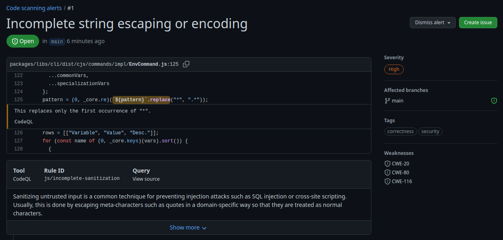

Análisis estático de código
Recordemos que DevSecOps es una evolución natural de DevOps que añade aspectos relacionados con la seguridad del producto de software. Es importante que nos acostumbremos a diseñar aplicaciones, bibliotecas y servicios seguros. Ya no es suficiente con desarrollar software, hay que hacerlo de manera segura. Ya hemos visto el uso de Dependabot para generar solicitudes de integración automáticas cada vez que se actualice una de nuestras dependencias o bien presente algún tipo de vulnerabilidad de seguridad. Ahora, ha llegado el momento de ver cómo realizar ciertos análisis de código para detectar otros tipos de vulnerabilidades e incluso de errores de programación sin la necesidad de ejecutar el programa. Simplemente analizando el código fuente.
Al finalizar, sabrá:
-
Qué es y en qué consiste el análisis estático de código.
-
Qué es CodeQL.
-
Cómo configurar la ejecución automática de CodeQL en los repositorios de GitHub.
-
Cómo visualizar las alertas de seguridad de un repositorio generadas por CodeQL.
Introducción
El análisis estático de código (static code analysis) consiste en el análisis del código con objeto de encontrar vulnerabilidades de seguridad o errores de programación sin necesidad de ejecutarlo. Lee el código fuente, detecta patrones o vulnerabilidades de seguridad e informa de lo que encuentra para que lo resolvamos.
Básicamente, tenemos dos tipos de análisis. Por un lado, el que realiza una comprobación estática (static check) que lo que hace es garantizar que el código se ha redactado según la sintaxis del lenguaje y sigue las reglas de formato marcadas por la organización, además de encontrar algunos errores de programación que pueden generar problemas durante su ejecución. En JavaScript y TypeScript, se suele usar ESLint, https://eslint.org. Por otra parte, tenemos el escaneo de código (code scanning) que realiza comprobaciones más complejas del código buscando vulnerabilidades y errores de programación.
En esta lección, vamos a centrarnos en CodeQL, la herramienta de escaneo de código proporcionada por GitHub.
CodeQL
CodeQL es una herramienta de escaneo de código disponible en GitHub que se apoya en inteligencia artificial para detectar errores de codificación y vulnerabilidades de seguridad. Para repositorios públicos es gratuita. En cambio, para repositorios privados, de pago. Cuando detecta código vulnerable, genera una alerta para nuestro conocimiento. Su trabajo lo realiza mediante un flujo de GitHub Actions, consumiendo parte de su capa gratuita cada vez que se ejecuta.
Puede trabajar con distintos lenguajes de programación como, por ejemplo, C/C++, Go, JavaScript, Python y TypeScript. A su vez, en el caso de Node.js, frameworks y bibliotecas como Axios, Express, Handlebars, jQuery y React, entre otras, son soportadas también.
Activación del escaneo de código
El escaneo de código se configura en las opciones del repositorio, concretamente, en Security > Code security and analysis > Code scanning > Tools:

No hay más que desplegar el menú contextual de CodeQL analysis > Set up y seleccionar Default o Advanced, según qué configuración deseamos aplicar al análisis. Esto mostrará un formulario con información sobre el análisis como, por ejemplo, el lenguaje de programación y cuándo realizar el análisis:

Configuración de análisis
Una configuración (setup) contiene los valores de los parámetros de configuración del análisis de código. Básicamente, consiste en indicar, tal y como hemos visto en la imagen de activación de CodeQL, el lenguaje de programación y cuándo ejecutarlo.
GitHub proporciona la configuración predeterminada (default setup) con la que podemos delegar la creación del flujo de trabajo en GitHub. Recordemos que el análisis de código se ejecuta en su propio flujo de trabajo de GitHub Actions, concretamente, bajo el nombre CodeQL. Cuando usamos esta configuración, cada vez que realizamos un push, se ejecutará el flujo de escaneo.
También es posible utilizar una configuración avanzada (advanced setup) con la que somos nosotros mismos los que debemos configurar CodeQL mediante un flujo de trabajo específico. En nuestro caso, no vamos a utilizar esta segunda opción, porque la configuración predeterminada atiende la mayoría de los casos. Pero es importante que sepa que puede generar su propio flujo de escaneo de código. En caso de hacerlo, por buenas prácticas, utilice el nombre de archivo codeql-analysis.yaml y como nombre CodeQL.
Fallo de comprobación
CodeQL puede encontrarse con distintos tipos de problemas, cada uno de ellos con un nivel de severidad. El fallo de comprobación (check failure) indica cuándo debe considerarse fallido el escaneo de código. Su configuración se encuentra en la sección Code scanning > Protection rules > Pull request check failure, justo debajo de la que hemos visto para activar el análisis. Ahí, tenemos un desplegable con el que indicar el nivel más bajo de severidad a partir del cual considerar que el análisis ha fallado, o sea, presenta problemas importantes que hay que resolver:
Su valor debería fijarlo la propia organización y podría ser diferente para cada proyecto. No es lo mismo implementar software médico o aeronáutico que un videojuego.
Alertas de escaneo de código
Una alerta de escaneo de código (code scanning alert) es una notificación de algún tipo de vulnerabilidad de seguridad o error de programación detectado. Aparecen en la pestaña Security del repositorio, bajo Overview > Vulnerability alerts > Code scanning:
Estas alertas presentan un nivel de severidad (severity level), esto es, la importancia del problema. Actualmente, sus posibles valores son: Error, Warning o Note. En caso de una vulnerabilidad de seguridad, el nivel de seguridad puede ser: Critical, High, Medium o Low. Recuerde que atendiendo a la configuración del fallo de comprobación, la alerta puede desembocar en un fallo del análisis o tan sólo mostrarla para nuestra información y, a partir de ahi, decidimos qué hacer.
A continuación, se muestra un ejemplo; se indica el archivo donde se observó la anomalía y la línea, junto con una breve descripción del problema detectado:

Para obtener más información sobre el problema, haga clic en Show more. Preste mucha atención a lo ahí indicado porque le ayudará a no caer en lo mismo en el futuro.
Observe que GitHub permite la creación de una propuesta desde la propia alerta, basta con hacer clic en Create issue. Una vez haya resuelto el problema, la alerta de seguridad desaparecerá por arte de birlibirloque. Mientras no la resuelva, si está ante una alerta que provoca fallo de comprobación, las comprobaciones requeridas para poder llevar a cabo las solicitudes de integración (pull requests) no se cumplirán. Y, según la configuración de su repositorio, es posible que no pueda realizarlas.